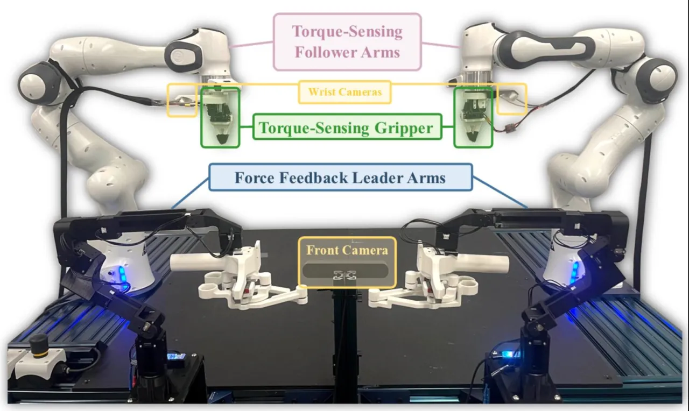
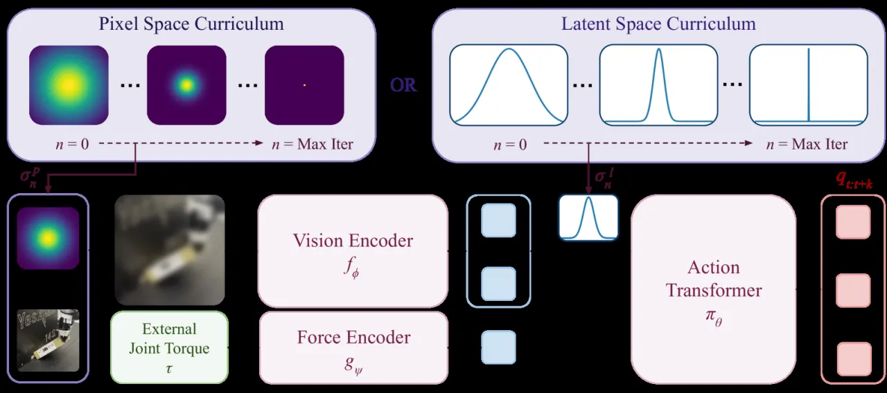
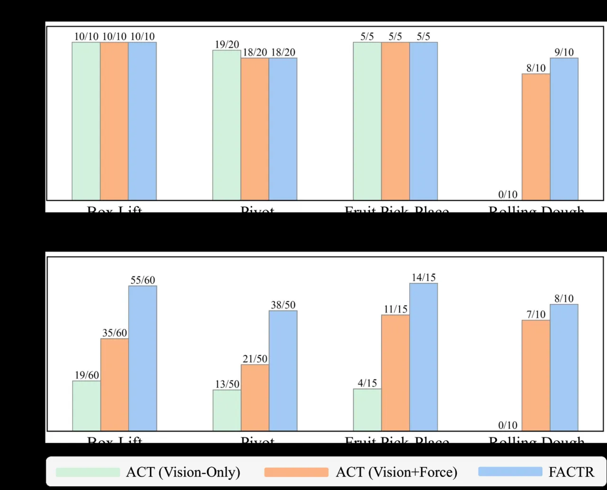
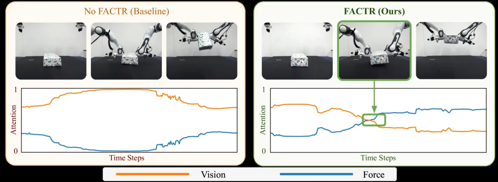

很多接触密集任务（搬箱子、擀面团）都靠力觉反馈才能可靠完成，但这些力信息在遥操作与策略学习里几乎没被用起来。FACTR 提出一套随训练逐渐减弱视觉模糊的课程，逼迫 transformer 策略先学会利用力觉、不再一味过拟合视觉。配合一套低成本双边力反馈遥操作系统，方法把对未见物体的泛化成功率相较不用课程的基线提升 43%。
力觉信息在现代协作机械臂（Franka Panda、KUKA LBR iiwa）上是现成可读的，但主流数据驱动方法（含 Behavior Cloning）几乎只依赖视觉，导致机器人行为局限于不需要精细力反馈的准静态运动学任务。作者指出两大障碍：一是缺少能在采数据时就捕捉力反馈的低成本直观遥操作系统；二是即便把力拼进观测，策略也往往过拟合视觉、忽略力——因为接触力信号区分度低，机械臂不接触时长期接近零。
"policies often overfit to using visual modality … without proper care during training, policies tend to ignore force input and rely primarily on visual information."

方法由两部分组成：(1) 一套低成本双边遥操作系统，把 follower 臂感知到的外部关节力矩回传给 leader 臂，让示教者"摸"到环境几何约束；(2) FACTR 力觉课程训练——在训练早期用算子（Gaussian blur / downsampling）强烈模糊视觉输入，随训练推进逐步减弱模糊、恢复视觉细节，从而迫使策略先学会利用力模态。

Leader 臂沿用 GELLO 式的低成本舵机 + 3D 打印结构，但主动驱动舵机以提供功能：力反馈控制律 τfeedback = μf Kf,p τext − Kf,d q̇，只回传外部关节力矩 τext（不含内部摩擦/惯性），让操作者更清晰地感知环境；配合零空间投影做可定制冗余度消解（用户自定义 qrest 静息姿态）、RNEA 主动重力补偿、摩擦补偿与关节限位保护。作者强调只传外力，避免操作者在无接触运动时受到 follower 臂的惯性摩擦干扰。
定义像素空间算子 βP(I, σ) 与隐空间算子 βL(z, σ)，可选 Gaussian blur 或 downsampling（MaxPool + 最近邻插值）。尺度参数 σn 由调度器（linear / cosine / exponential / step）在 N 步训练内逐渐衰减。直觉是：σ→∞ 时所有视觉输入坍缩成几乎相同的张量，模型只能学一个全局输出，于是梯度更新被迫集中在更新 force encoder 以最大化区分输入上；随后逐步释放视觉细节。论文正文中的默认配置为隐空间 + Gaussian blur + linear 调度器，并对随机初始化的 force encoder 做 warm-up。作者用 Neural Tangent Kernel (NTK) 框架给出了简化情形下的理论分析。
四个接触密集任务：Box Lift（双臂抬箱悬停≥2s）、Non-Prehensile Pivot（把物体顶到夹具角上翻转 90°）、Fruit Pick and Place（抓取柔软水果放入碗中）、Rolling Dough（持续擀面团成柱状≥8s）。每个任务用同一套超参、50 条遥操作示教，每个物体评测 5–10 次。基线为 ACT (Vision-Only) 与 ACT (Vision+Force)（拼了力但无课程）。
| 方法（未见测试物体平均成功率） | Test 成功率 |
|---|---|
| ACT (Vision-Only) | 21.3% |
| ACT (Vision+Force)，无课程 | 61.2% |
| FACTR (Ours) | 87.5% |
在训练物体上各方法表现相近（除擀面团任务中 vision-only 直接把面团压扁、完全失败）；差距体现在未见物体上。作者认为力反馈在模式切换时刻（如接触到箱子、抓住水果的瞬间）提供了关键信号。


先让策略成功抬箱一次，再把箱子打落，评估第二次尝试。Table I 显示：训练物体上所有方法恢复成功率近 100%；但在测试物体上 vision-only 从第一次的 31.7% 跌到第二次的 13.3%，而带力的策略保持相近。作者观察到 vision-only 在箱子被打落后常"僵住"不重试，而 FACTR 通过外部关节力矩读数回落到抬起前的值来检测失接触并成功重试。
| Box Lift 恢复（第二次尝试） | 训练物体 | 测试物体 |
|---|---|---|
| ACT (Vision-Only) | 4/5 | 4/30 (13.3%) |
| ACT (Vision+Force) | 5/5 | 16/30 (53.3%) |
| FACTR | 3/3 | 27/30 (90.0%) |
在最难的 pivot 任务上（仅用 5 个测试物体、各 5 次）验证课程的必要性。作者发现逐渐衰减的课程一致优于固定尺度："performance with a curriculum of decaying smoothing performs better than a fixed curriculum across all tasks"——固定模糊虽能避免过拟合视觉，但无法从未模糊图像中提取完成任务所需的细节。同时对比像素/隐空间、两种算子、四种调度器后，"we do not find a uniform advantage or disadvantage for any set of parameters"，说明 FACTR 对课程参数相对鲁棒。
遥操作用户研究（对比无驱动 leader-follower 基线）：FACTR 系统带来 +64.7% 任务完成率、−37.4% 完成时间、+83.3% 主观易用性。
follower 臂的外部关节力矩传感器精度受限，力矩读数可能太噪，尤其影响需要细微力调整的精细操作。作者建议未来引入高分辨率触觉传感或 haptic gloves 提升反馈精度。
方法假设 follower 臂本身具备外部关节力矩传感。未来可探索适配"仅在末端装 force-torque 传感器"的机械臂。
课程效果受多个超参影响（模糊算子选择、调度策略等），可能高度依赖具体任务、需要大量调参。作者建议发展自适应 / 自调优的课程策略来动态调整超参。